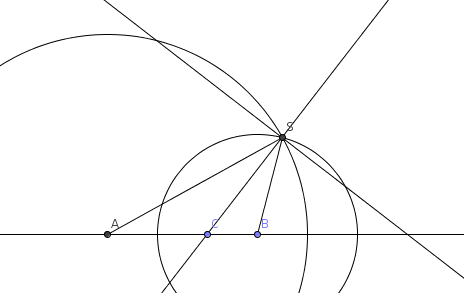

| Choisissez votre langue ! | Choose your language ! |
Deux cercles sont dits
'orthogonaux'
s'ils sont sécants et si leurs tangentes aux points d'intersection sont orthogonales.
Montrer que C(O,R) et C'(O',R') sont orthogonaux si et seulement si OO'2=R2+R'2.
Calculer alors la puissance de O par rapport à C' et la puissance de O' par rapport à C.
Montrer que pour que deux cercles soient orthogonaux, il faut et il suffit qu'il existe un diamètre de l'un d'entre eux qui soit divisé harmoniquement par l'autre cercle.
Si P' est un point distinct de O et n'appartenant pas au cercle C, comment construire tous les cercles orthogonaux à C et passant par P' ?
Two circles are said to be
'orthogonal'
if they intersect and if their tangents at the points of intersection are orthogonal.
Show that C(O,R) and C'(O',R') are orthogonal if and only if OO'2=R2+R' 2.
Then calculate the power of O with respect to C' and the power of O' with respect to C.
Show that for two circles to be orthogonal, it is necessary and sufficient that there exists a diameter of one of them which is harmonically divided by the other circle.
If P' is a point distinct from O and not belonging to the circle C, how to construct all the circles orthogonal to C and passing through P'?
aide
Utiliser la propriété caractéristiques des tangentes.
Utiliser également le théorème de Pythagore.
Utliser la définition de la puissance d'un point par rapport à un cercle.
Utiliser la construction du conjugué harmonique d'un point, comme suit :
Par exemple si on a A, B et C alignés, C n'étant pas le milieu de [AB] on cherche D tel que (A,B,C,D) soit une division harmonique.
Tracer le cercle de centre A et de rayon 2AC.
Tracer le cercle de centre B et de rayon 2BC.
Les deux cercles se coupent en un point S qui est le troisième sommet d'un triangle ABS ayant (AC) pour bissectrice intérieure, grâce à .
Il suffit alors de tracer la bissectrice extérieure en S qui coupe le droite (AB) en D.

hint
Use the tangents characteristic property.
Also use the Pythagorean theorem.
Use the definition of the power of a point with respect to a circle.
Use the construction of the harmonic conjugate of a point, as follows:
For example, if we have A, B and C aligned, C not being the midpoint of [AB], we seek D such that (A,B,C,D) is a harmonic division.
Draw the circle with center A and radius 2AC.
Draw the circle with center B and radius 2BC.
The two circles intersect at a point S which is the third vertex of a triangle ABS having (AC) as interior bisector, thanks to .
It is then sufficient to draw the exterior bisector in S which intersects the straight line (AB) in D.
solution
L'applet qui suit vous permet de faire varier avec le curseur le rayon R du cercle C de centre O.
Vous pouvez également déplacer les points A et P sur le cercle C.
Solution :
La figure formée par les deux centres O, O’ et un des deux points d'intersection est un triangle rectangle.
Du théorème de Pythagore, il en résulte la relation entre les deux rayons et la distance entre les centres : OO’2 = R2 + R’2.
Réciproquement, si deux cercles vérifient cette relation ils sont orthogonaux.
La puissance du point O par rapport au cercle C' est R2.
La puissance du point O’ par rapport au cercle C est R’2.
Pour que deux cercles soient orthogonaux, il faut et il suffit qu'il existe un diamètre de l'un d'entre eux qui soit divisé harmoniquement par l'autre cercle. En effet, la puissance du point O par rapport au cercle (c’) est OA2 = OP’ × OQ’. On a donc OP2 = OQ2 = OP’ × OQ’. [P, Q, P’, Q’] est une division harmonique d'après la relation de Newton.
Etant donné un point P', distinct du centre O et n'appartenant pas au cercle, pour trouver les cercles orthogonaux à C passant par P', tracer le diamètre [PQ] sur la droite (OP') et trouver le point Q’ tel que [P, Q, P', Q’] soit une division harmonique. Le centre d'un tel cercle se trouve sur la médiatrice de [P'Q']
solution
The following applet allows you to vary with the cursor the radius R of the circle C with center O.
You can also move points A and P on circle C.
Workaround:
The figure formed by the two centers O, O' and one of the two points of intersection is a right-angled triangle.
From the Pythagorean theorem, this results in the relationship between the two radii and the distance between the centers: OO'2 = R2 + R'2.
Conversely, if two circles satisfy this relation they are orthogonal.
The power of point O with respect to circle C' is R2.
The power of point O' with respect to circle C is R'2.
For two circles to be orthogonal, it is necessary and sufficient that there is a diameter of one of them which is harmonically divided by the other circle. Indeed, the power of the point O with respect to the circle (c') is OA2 = OP' × OQ'. So we have OP2 = OQ2 = OP’ × OQ’. [P, Q, P', Q'] is a harmonic division according to Newton's relation.
Given a point P', distinct from the center O and not belonging to the circle, to find the circles orthogonal to C passing through P', draw the diameter [PQ] on the line (OP') and find the point Q' such that [P, Q, P', Q'] is a harmonic division. The center of such a circle lies on the perpendicular bisector of [P'Q']
|
Création Gilles Dubois - licence CC-BY-SA
Created by Gilles Dubois - licence CC-BY-SA
|
Septembre 2023
September 2023
|
Version mobile Jquery
Mobile Jquery version
|
|